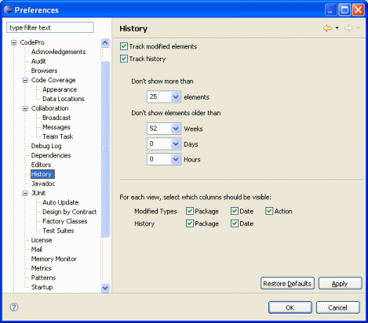

Preferences - History This page is used to control the Modified Type
and Member Views and Java History View options. Track modified elementsThis checkbox controls whether CodePro should track modified types and members throughout the system. Turn this option off to improve performance. Track historyThis checkbox controls whether CodePro should track Java file access history in the Java History view. Turn this option off to improve performance. Element historyThese options control how many elements are displayed in the modified type and member views and the history view. Options are provided to show only the most recent n number of modified elements and/or only those elements modified in the specified time period (e.g., the last week, the last n days, etc.). Visible columnsEach of the various history views defines a number of optional columns. These checkboxes allow you to customize which of the optional columns are visible in the views. Note that you would need to close/re-open the view or quite/re-start Application Developer/Eclipse for the changes to take effect. Early StartupIf either the Track modified elements or Track history preferences are enabled, then this plugin must be loaded and executed when Eclipse is launched. |